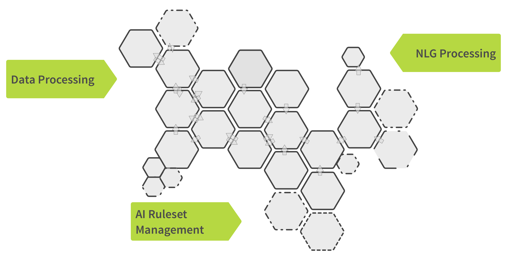

AX NLG Cloud Cockpit
Develop your own Natural Language Generation applications in the cloud
What is the Cockpit?
The cockpit is a web-based user interface for developing and deploying your NLG applications and connecting them with your own services, based on our NLG cloud platform.

NLG Development
NLG Cloud: “data to text“ – We let you run NLG rulesets to generate natural language on our content AI - in 13 languages
Content Generation Configuration Tools - You can use our configuration rules to adapt the NLG training rulesets and our integrated development environment.
ATML3 - With the ruleset development toolkit for ATML3 you can develop any kind of story type and text style, based on your data.